Alphard / Vellfire
Premium choice for small groups who want a more comfortable ride with lighter luggage.
Explore Pick-U Japan’s private transfer fleet for airport transfers, hotel pickups, city rides, and charter travel. Compare Alphard, Hiace, Coaster, and bus options based on passenger capacity, luggage space, and travel style.
Choose the most suitable vehicle for your airport transfer, private transfer, or charter trip in Japan based on passenger count, luggage needs, and travel purpose.
Pick-U Japan provides private transfer vehicles for couples, families, sports travelers, and larger tour groups. If you are planning a Narita airport transfer, Haneda airport pickup, city transfer, or private charter in Japan, this page helps you compare the most suitable vehicle before booking.
Premium choice for small groups who want a more comfortable ride with lighter luggage.
Best van for groups with many suitcases, sports equipment, or oversized luggage.
Ideal for day tours and group travel when luggage is minimal or not required.
Mid-size bus for sightseeing groups, day tours, and regional charter travel.
Large coach for tour groups, school groups, events, and long-distance group transport.
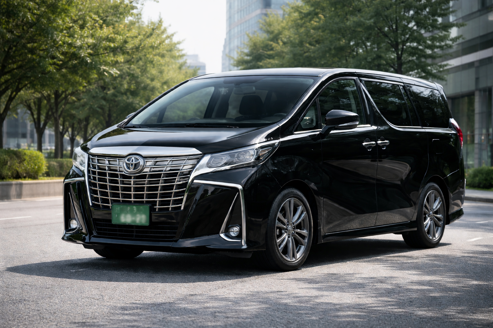
The Toyota Alphard or Vellfire is a premium private transfer vehicle in Japan, ideal for couples, small families, and travelers who want a more comfortable ride for airport transfers, hotel pickups, and city travel. The seating is spacious and luxurious, making it especially suitable for longer rides, while luggage space is more limited than a van.
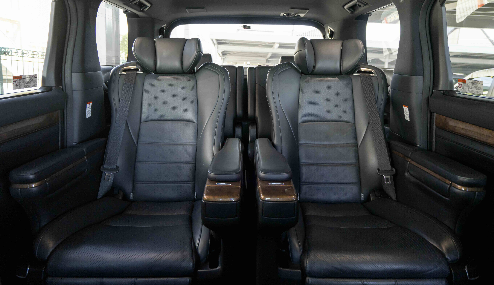
Comfortable seating layout for couples, families, and travelers who prefer a smoother, more premium ride.
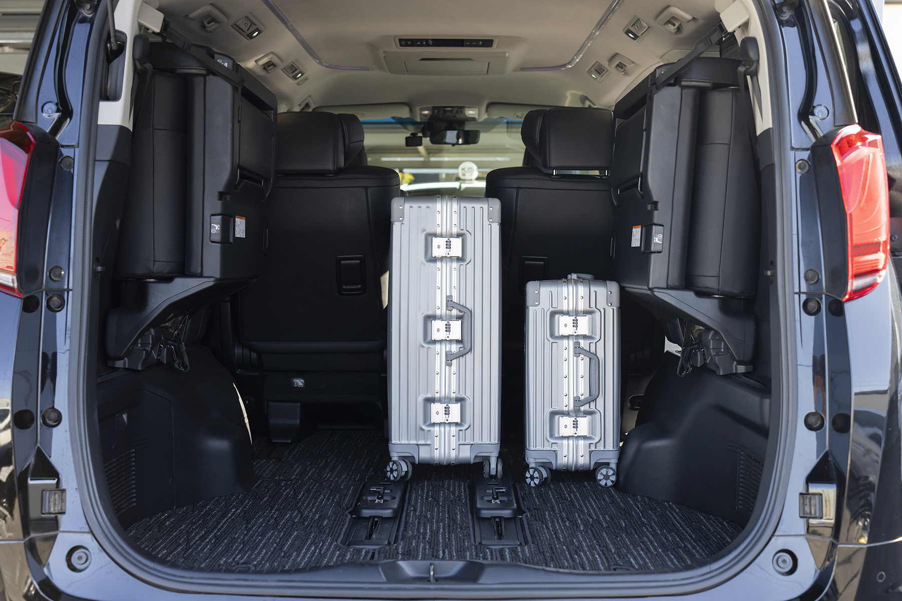
Recommended for standard luggage rather than oversized cases, large sports gear, or very heavy baggage loads.
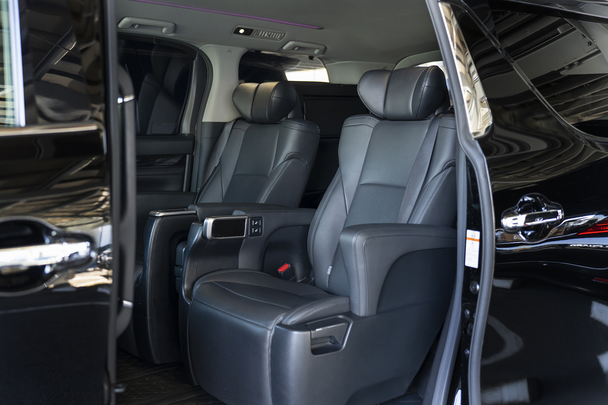
A refined option for airport arrivals, hotel transfers, and comfortable city transport in Japan.
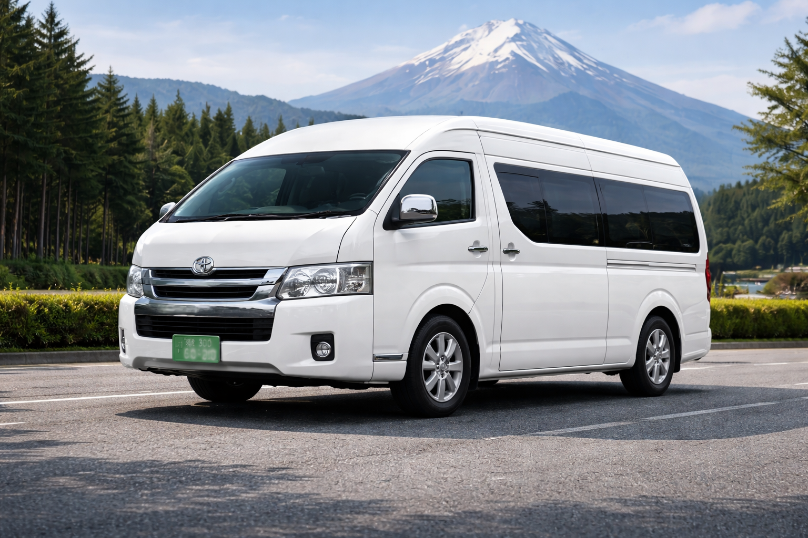
The Toyota Hiace 9-seater is the most practical private transfer vehicle in Japan for groups traveling with luggage. It is widely used for airport transfers, long-distance rides, and family travel because it offers much larger luggage capacity than smaller premium vehicles.

Designed for group comfort while still keeping strong luggage capacity for airport and regional travel.

A practical solution when travelers need more space for large suitcases, sports bags, or multiple items.

Well suited for airport arrivals, hotel pickups, and point-to-point transfer service in Japan.
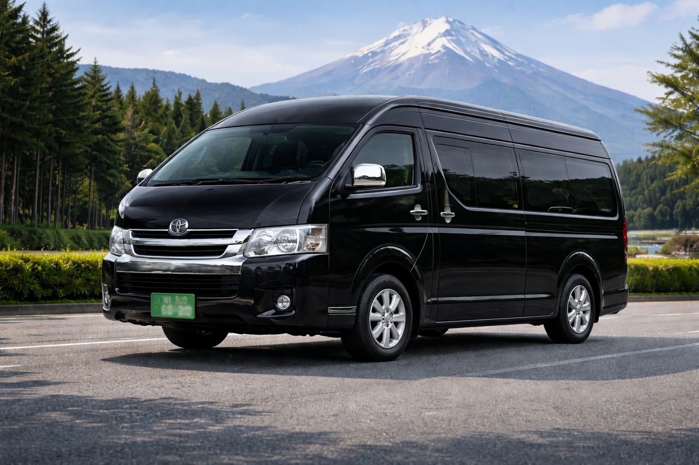
The Toyota Hiace 14-seater is designed for small group travel when luggage is minimal. This layout is mainly focused on additional seating rather than cargo space, so it works best for day tours, sightseeing, and group transport without large suitcases.
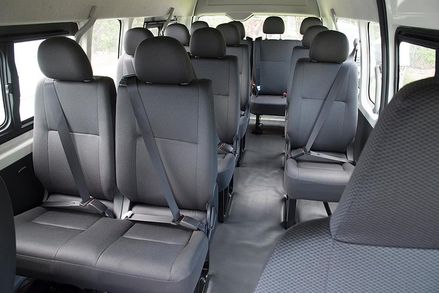
Configured for higher passenger count, making it useful for tours and coordinated group movement.
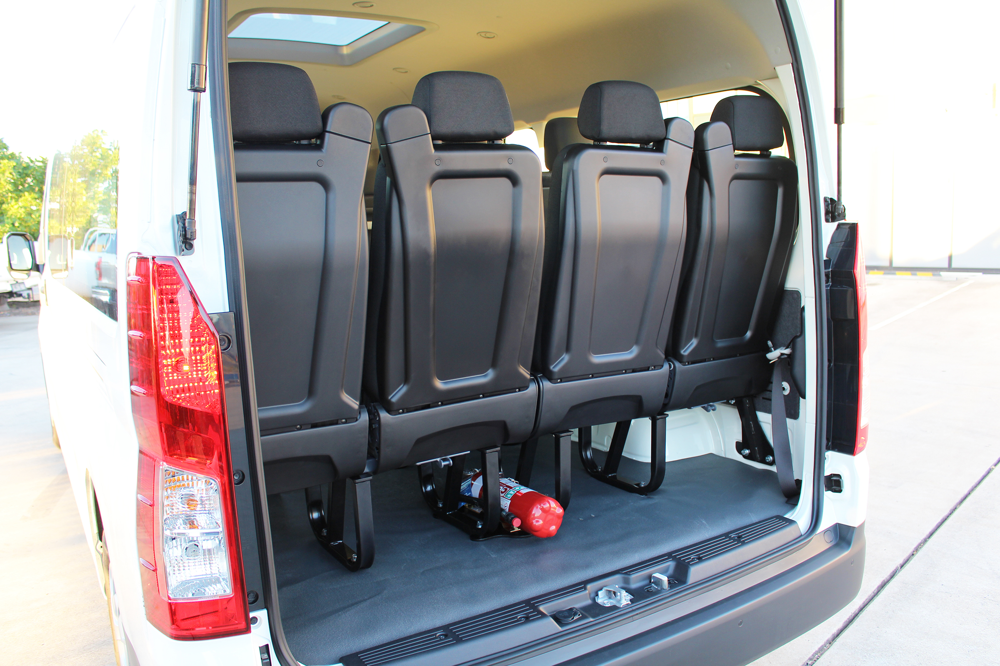
This layout focuses on seating, so luggage capacity is much more limited than the 9-seater Hiace.
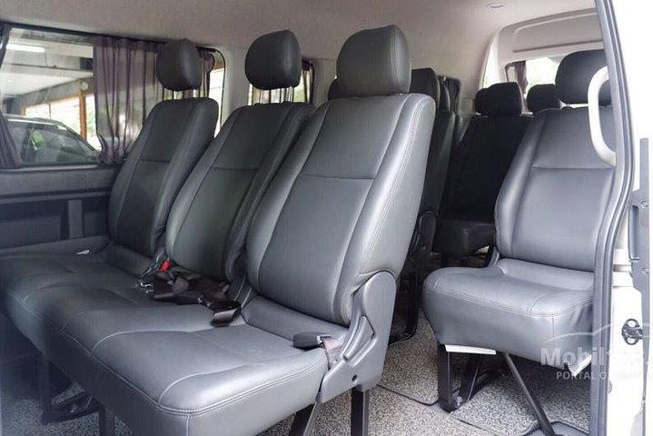
A convenient setup for local sightseeing, event movement, and non-airport group transportation.
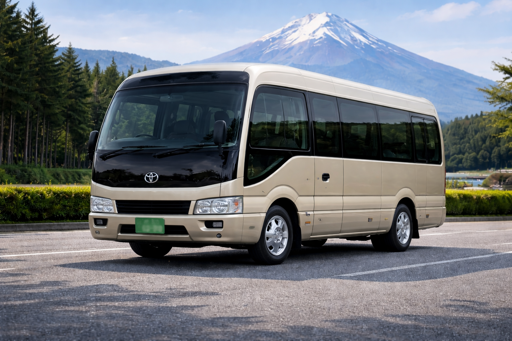
The Toyota Coaster is a popular mid-size charter bus in Japan for sightseeing groups, regional travel, and private day tours. It is well suited for medium-size groups who want to stay together in one vehicle while traveling comfortably across multiple destinations.
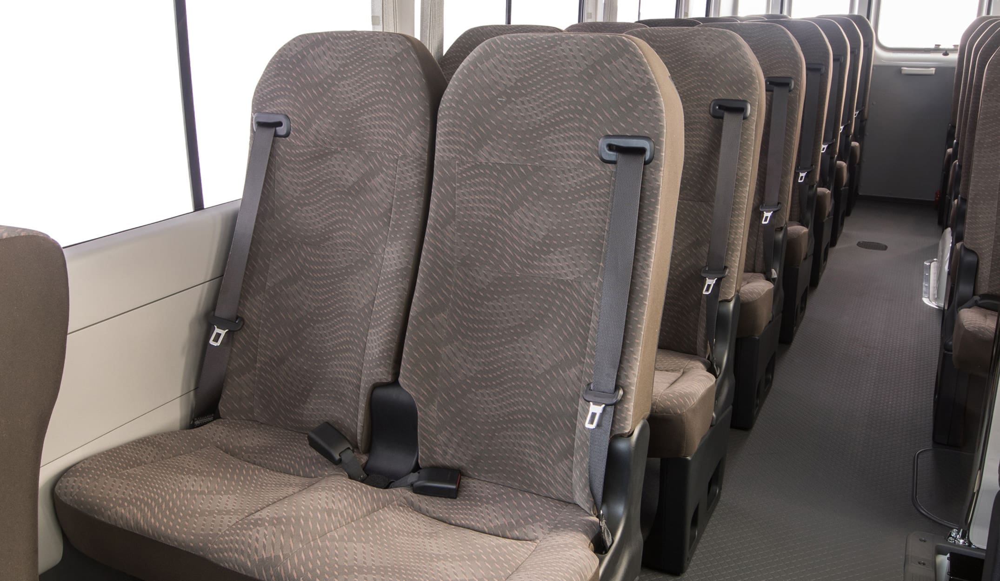
Designed for medium-size group travel with a practical layout for day tours and regional transport.
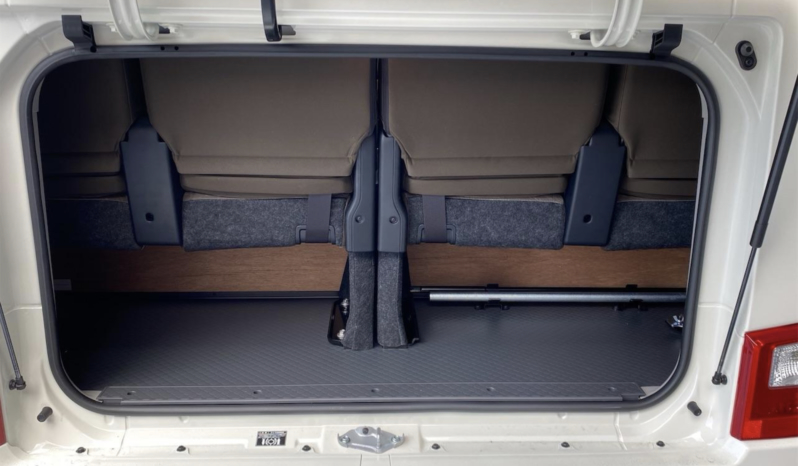
Final passenger count depends on whether the group is traveling with suitcases or minimal baggage.
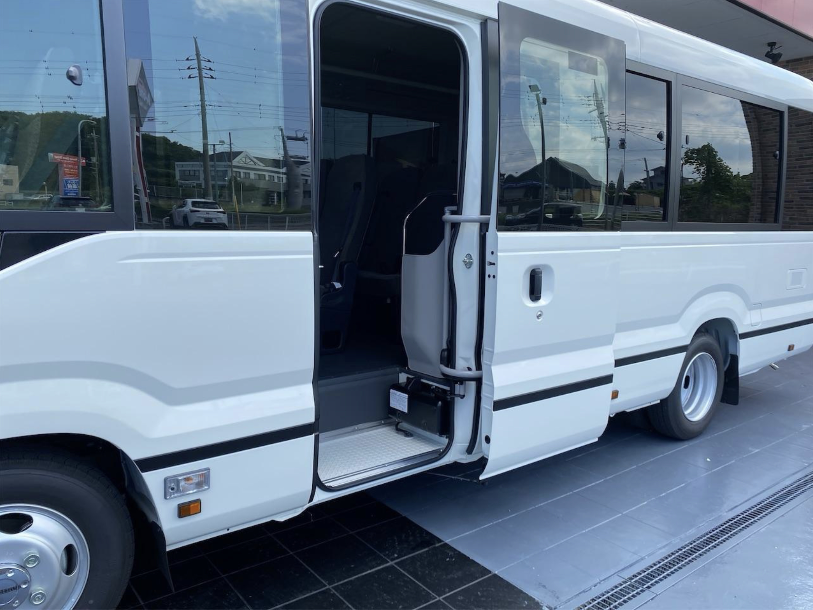
A practical boarding setup for sightseeing service, tour stops, and coordinated group departures.
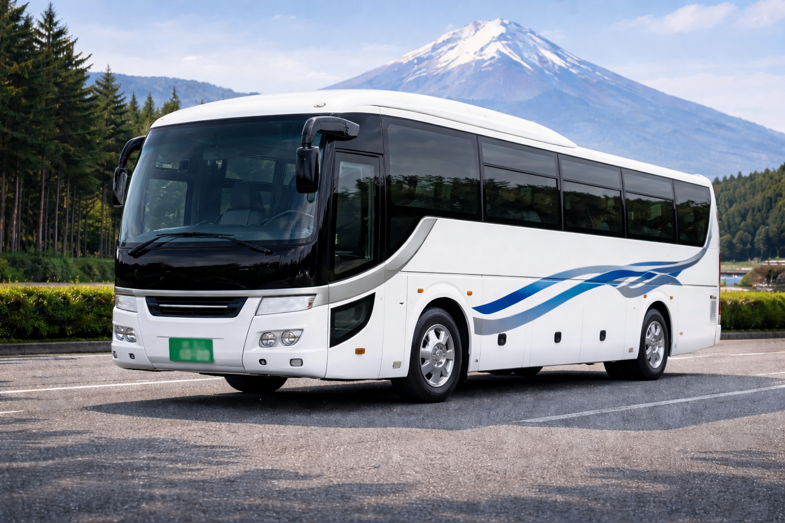
The 45-seat tour bus is built for large group transportation in Japan. It is commonly used for school groups, large tours, company events, and long-distance charter trips where both passenger capacity and luggage storage are important.
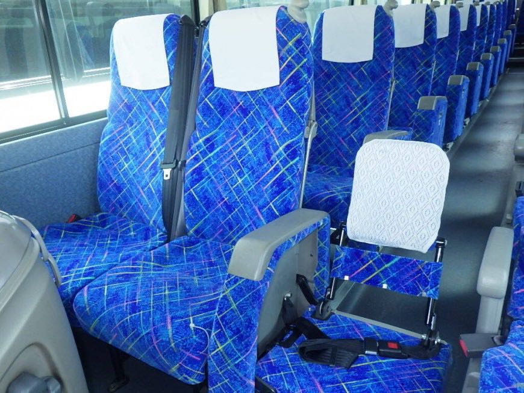
Ideal for organized group travel where keeping everyone together in one coach is the priority.
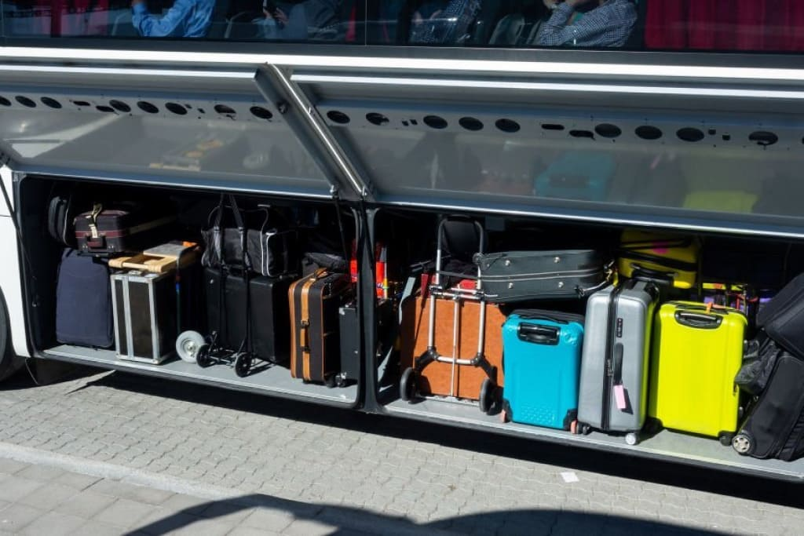
Under-floor luggage space makes this vehicle suitable for tour groups and airport group transport.
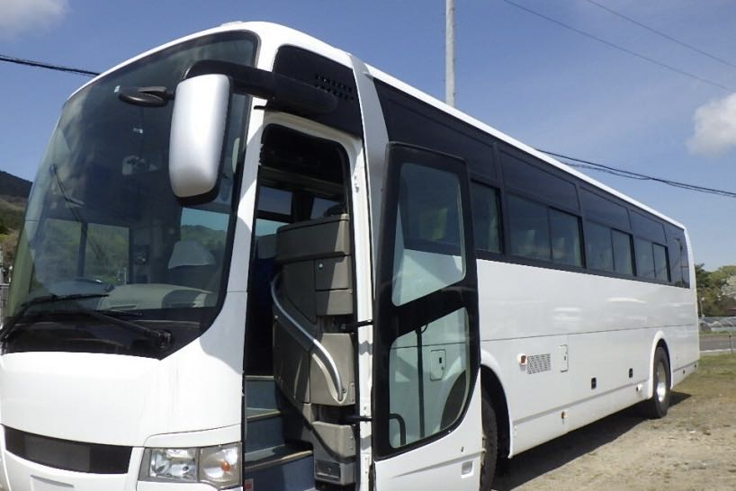
Well suited for charter service, large pickup operations, and scheduled group movement.
Clear answers to help you choose the right private transfer vehicle in Japan before booking.
The best vehicle depends on passenger count, suitcase count, luggage size, and whether your trip is an airport transfer, city transfer, or private charter. If you are unsure, send us your group size and baggage details.
Yes. Passenger seats and luggage space affect each other. Vehicles like the Hiace 14-seater prioritize seating, while the Hiace 9-seater prioritizes luggage capacity.
The Hiace 9-seater is usually the best choice for airport transfers with many suitcases, sports equipment, or oversized baggage.
The Alphard or Vellfire is the best option if you want a more premium, quiet, and comfortable ride for a small group with lighter luggage.
Yes. Vehicles such as the Hiace 14-seater, Coaster, and 45-seat bus usually require advance booking, especially during busy travel seasons in Japan.
Tell us your passenger count, suitcase number, and route, and we can recommend the most suitable vehicle for your airport transfer, private transfer, or charter trip in Japan.